基本の流れ：BOXから出す → 取り付け → 電源ON → 撮影 → 録画停止 → 電源OFF → 必要なら動画を取り込む → 充電・BOXへ戻す
0. 収納場所・付属品
共用カメラと付属品は、ラベルの付いた「アクションカメラ」ツールケースにまとめています。使用後は必ず元に戻してください。
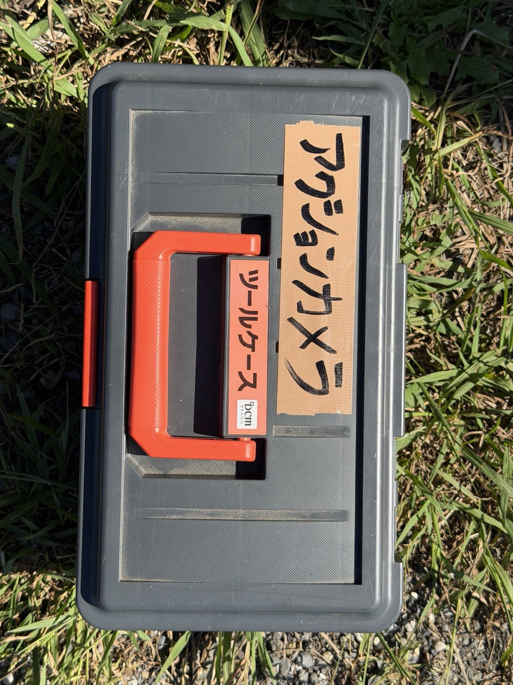
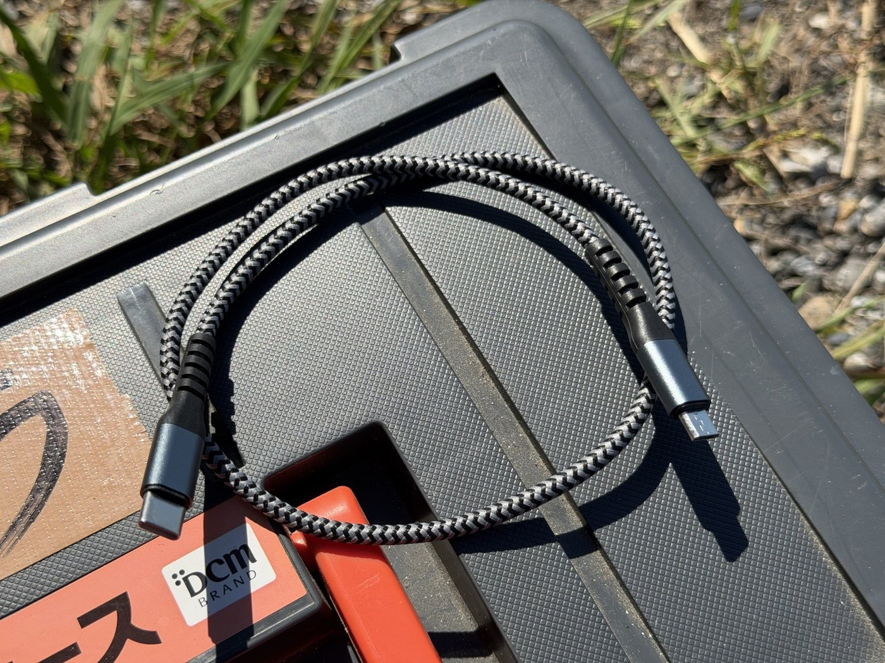
1. ボタンを確認
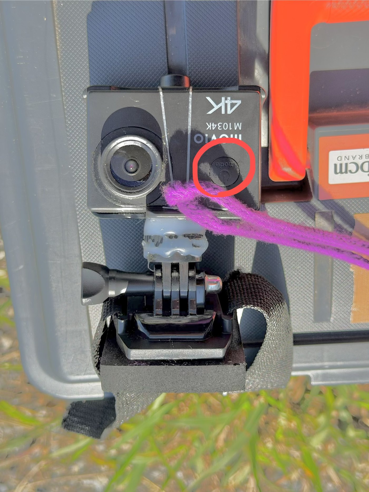
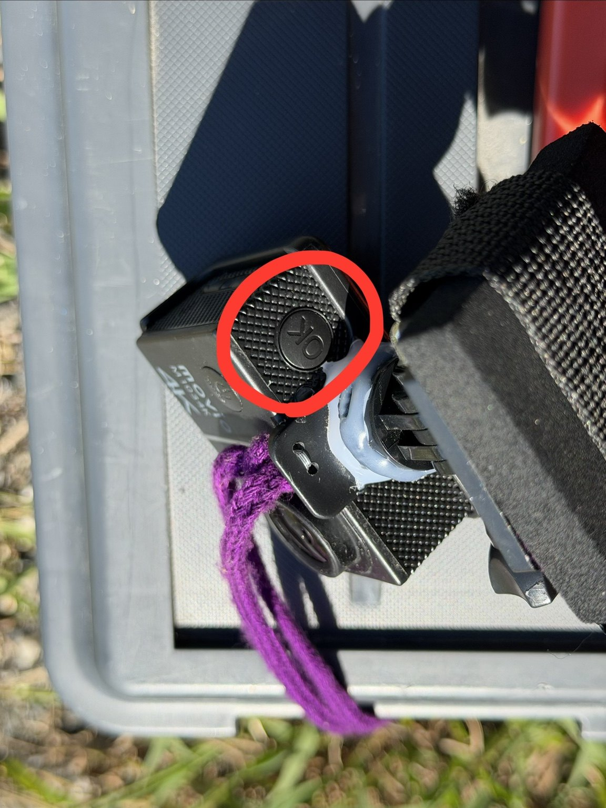
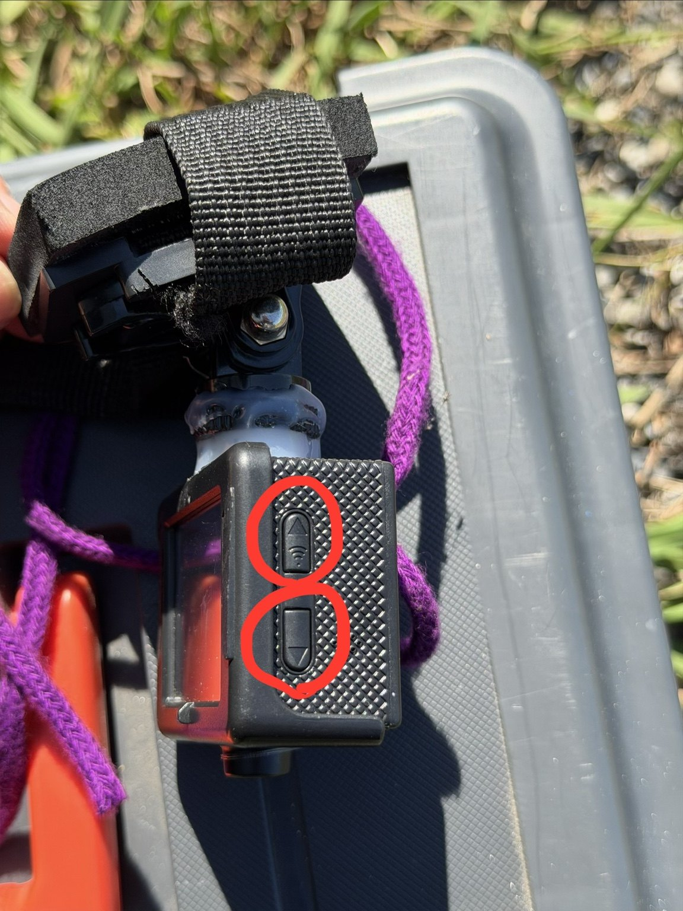
2. 撮影前の準備・確認
- バッテリー残量が十分にあるか確認する
- 日付・時刻がずれていないか確認する
- 撮影設定を確認する
- 取り付け後、撮りたい範囲が画角に収まっているか確認する
日付表示は基本ON。日時がずれている場合の合わせ方は、必要に応じて補助説明を追加します。
3. グライダーへのセット
- カメラはクロスバーまたはテールに取り付ける
- 取り付けベルトを巻き付け、しっかり固定する
- 落下防止のため、サブの紐も結ぶ
- 取り付け後、カメラがぐらつかないか確認する
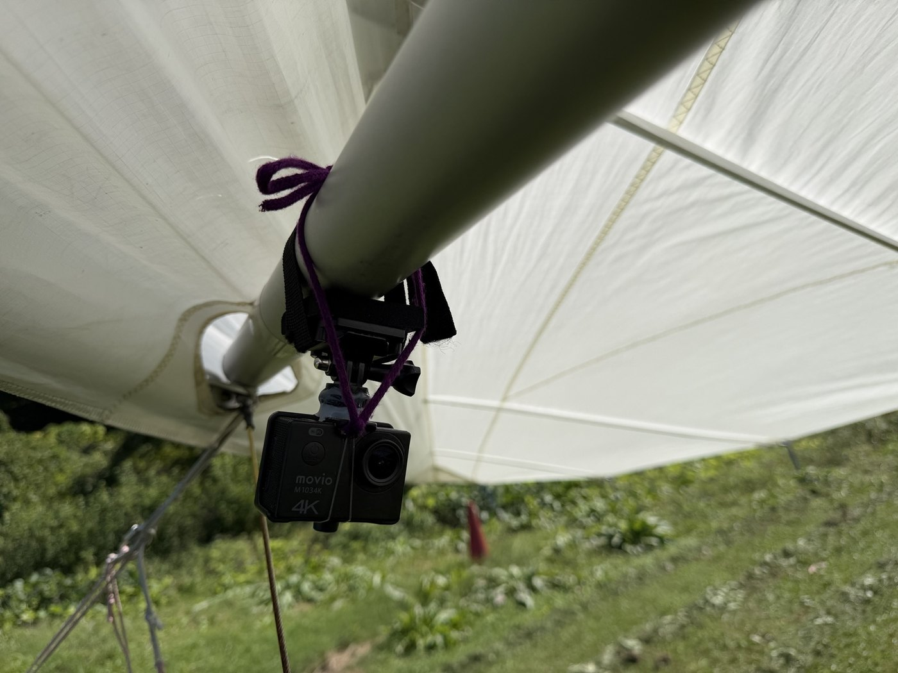
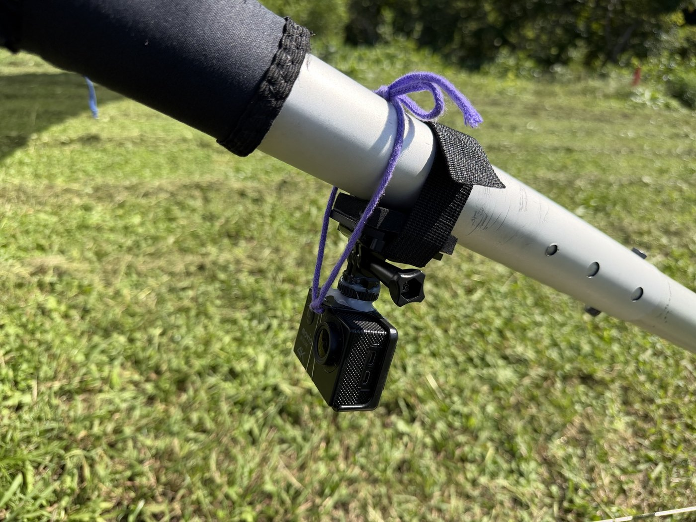
テール取り付け時は特に落下防止を念入りに確認してください。
4. 撮影のしかた
- 前面の電源ボタンを長押しする
- 起動音が鳴ったら電源ON
- 上面の撮影／OKボタンを押す → 録画開始
- もう一度、上面の撮影／OKボタンを押す → 録画停止
- 録画停止を確認し、前面の電源ボタンを長押しする
- 終了音が鳴ったら電源OFF
5. 動画をiPhoneへ有線で取り込む
- カメラとiPhoneをType-C ⇔ Micro USBコードで接続する
- カメラに選択画面が出たら、側面ボタンで「USBモード」を選び、上面のOKボタンで決定する
- SDカードの画面が表示されたら、iPhoneの「ファイル」アプリを開く
- 「場所」からUDISKを開く
- videoフォルダを開き、動画を確認する
- 必要な部分を2〜3分程度までカットしてからiPhoneへ保存する
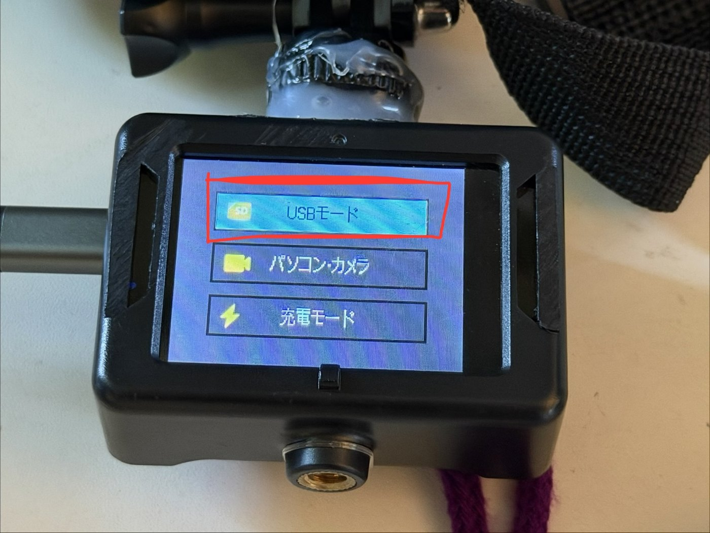
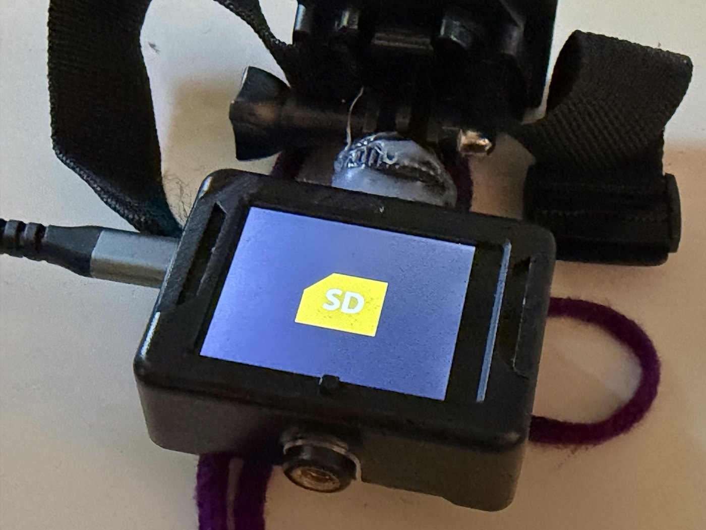
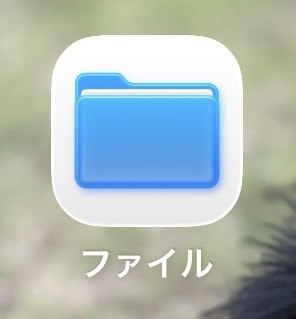
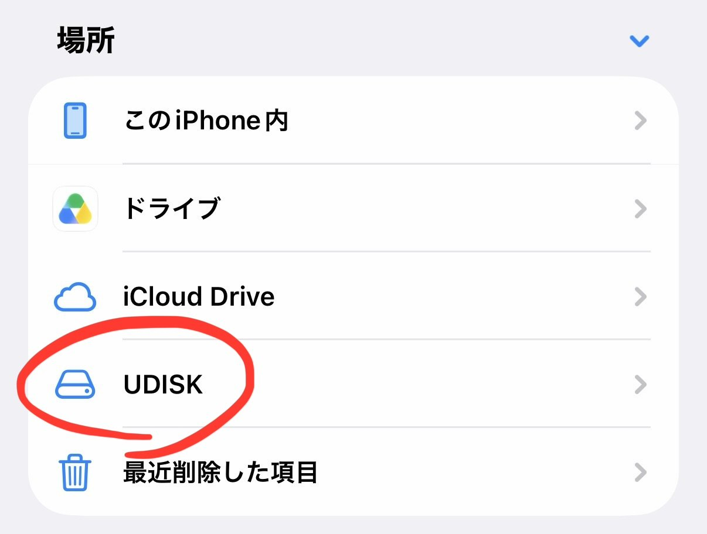
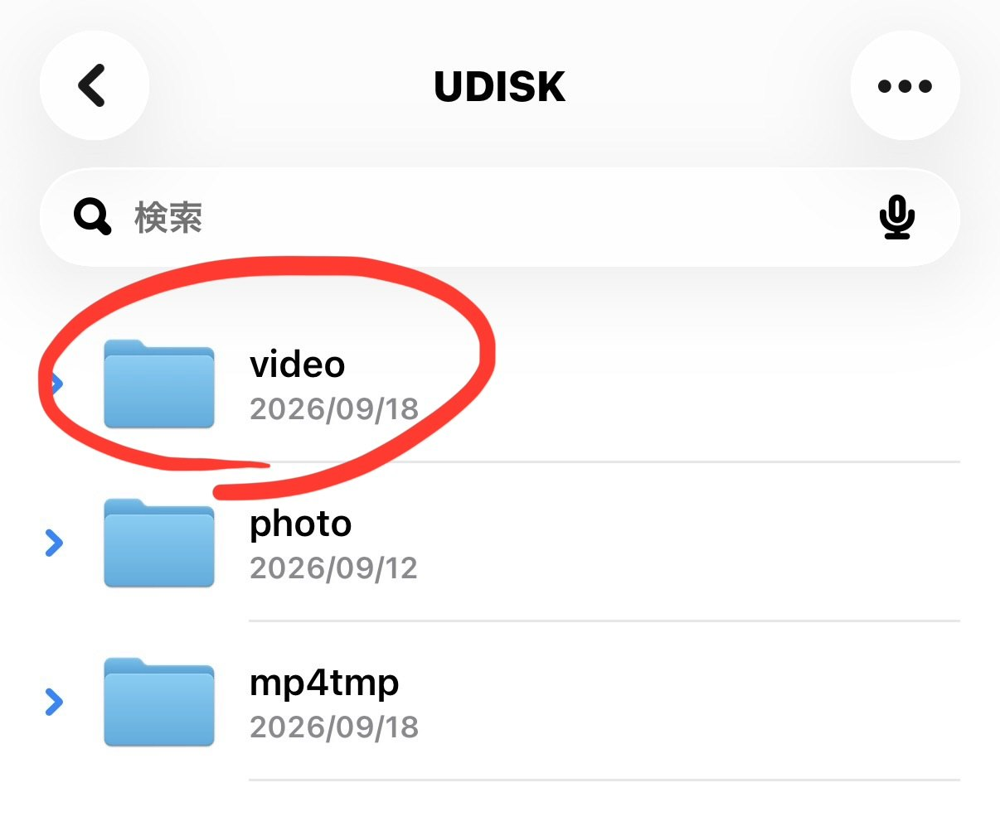
動画の保存には時間がかかります。長い動画はその場で無理に取り込まず、カメラを持ち帰ってPCで取り込むのを推奨します。PCでは Micro USB ⇔ USB ケーブルを使用します。
6. Wi-Fi接続を使う場合
Wi-Fi接続画面では、接続先のSSIDとパスワードを確認できます。スマホ側から、画面に表示されたSSIDへ接続するときに使います。
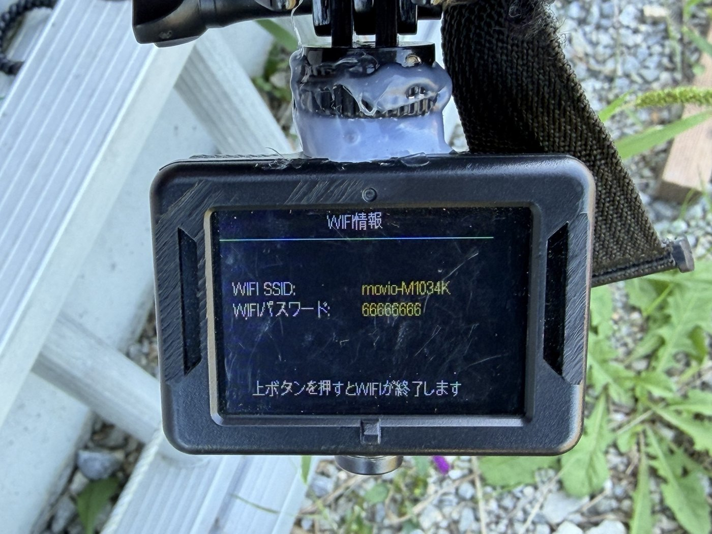
動画の取り込みは、手順が分かりやすい有線接続を基本として案内しています。
7. 充電・片付け
- 使用後は、倉庫のポータブル電源で充電する
- 用意してある充電ケーブルを使用する
- 帰る前にポータブル電源から外す
- カメラ・取り付け部品・ケーブル類をアクションカメラBOXへ戻す